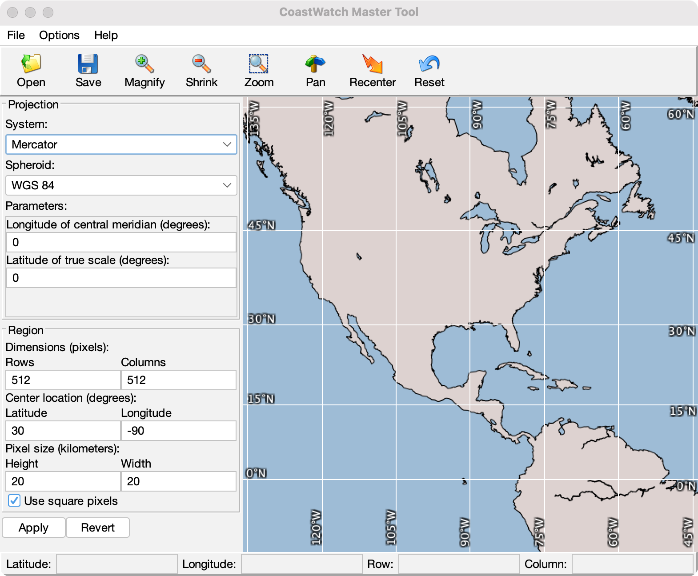

CoastWatch Master Tool Help: Overview
The CoastWatch Master Tool is a part of the CoastWatch Software
Library and Utilities package. You can use it to create map
projection master files for the cwregister program. A master file
contains a set of parameters specifying:
- Map projection system, for example Mercator
- Spheroid model
- Map projection system-specific parameters
- Region dimensions and pixel size
- Map to image coordinate transform
In addition to creating master files from scratch, you can load
projection parameters from standard CoastWatch IMGMAP (.cwf) and HDF
product files. A CoastWatch HDF master file contains all parameters
necessary to define a master region but no actual data variables.

The figure above shows the various components of the tool window.
The components perform the following tasks:
- Menu bar
- Access to file operations, geographic overlay options, and
the help system.
- Tool bar
- Buttons for common file and master operations.
- Master view
- The main area showing the currently defined master
region.
- Track bar
- Tracks mouse movement and shows the pointer location in
latitude/longitude and image row/column coordinates.
- Projection parameters
- Access to the map projection system, spheroid, and map
projection system-specific parameters.
- Region parameters
- Access to the region dimensions, center location, and pixel
size parameters.
The following help sections contain more details on using the
CoastWatch Master Tool: